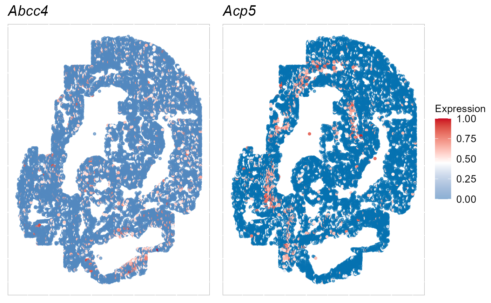
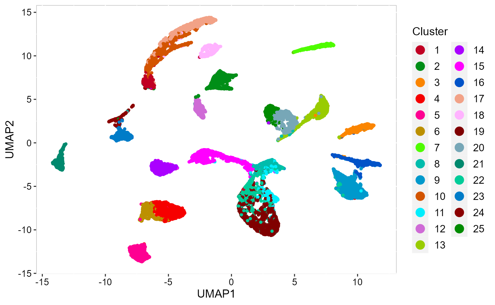
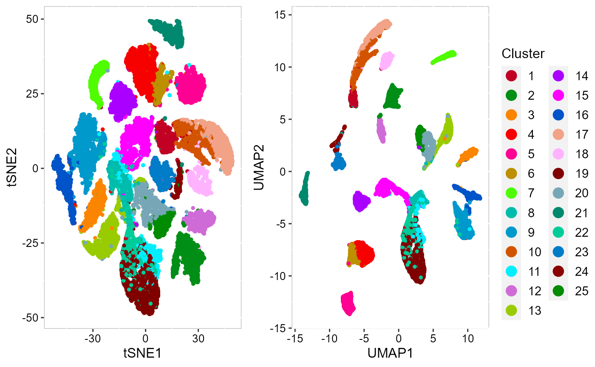
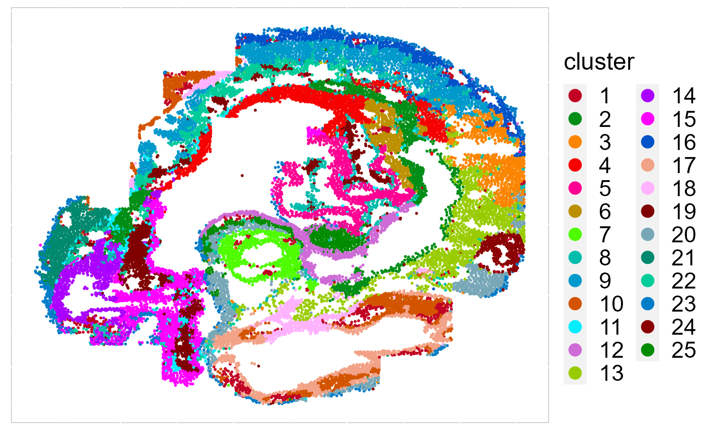
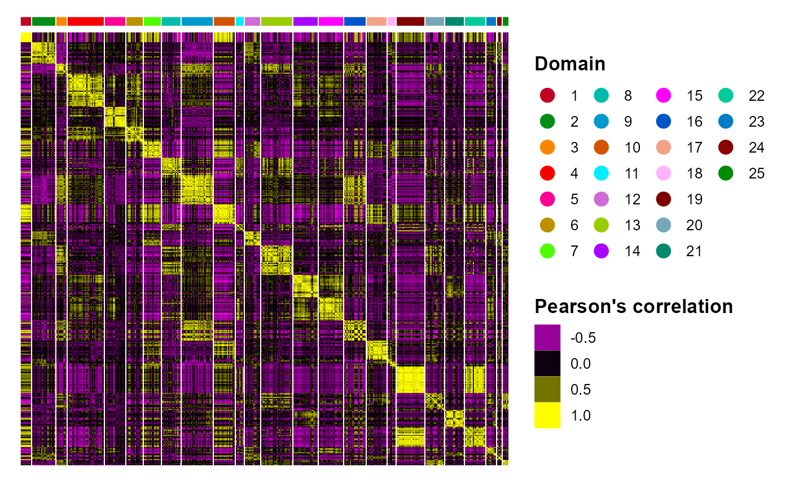
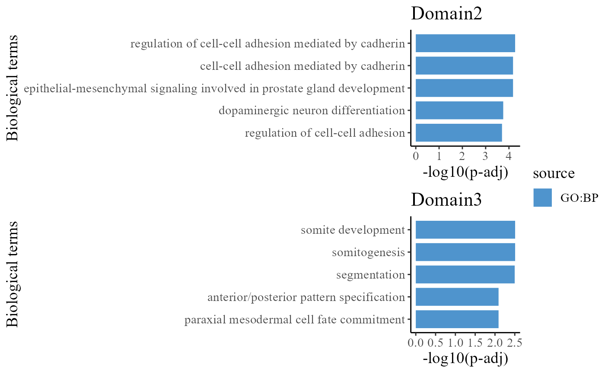
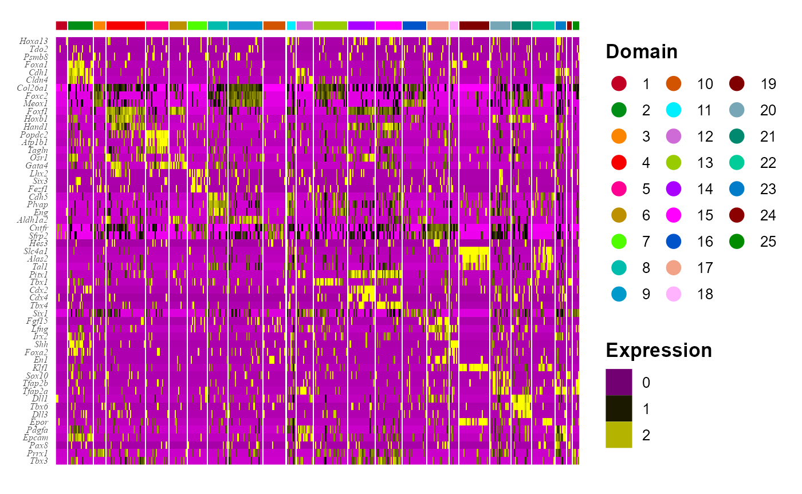
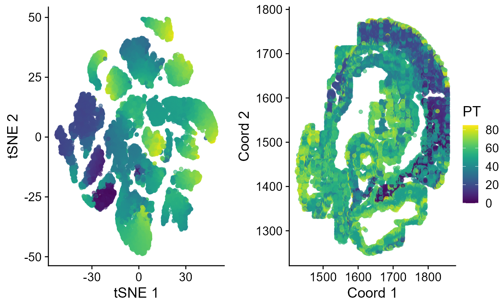

vignettes/single_Embryo_DRSC_tutorial.Rmd
single_Embryo_DRSC_tutorial.RmdThis tutorial demonstrates how to use SRTpipeline (>=0.1.0) to analyze a spatially-resolved transcriptomics (SRT) data from seqFISH platform. The analytical pipelines are similar to the SRTpipeline workflow for Visium SRT analysis. We emphases how to use DR-SC model to achieve spatial embedding and clustering and its followed applications. This tutorial will cover the following tasks, which we believe will be common for many spatial analyses:
First, we load SRTpipeline.
For this tutorial, we will introduce how to create a SRTProject object with single SRT sample using SRTpipeline that includes an introduction to common analytical workflows for a single data batch. Here, we will be taking a spatial transcriptomics dataset for mouse embryo as an example. There are 4015 spots and 33538 genes that were sequenced on the 10x Visium platform. Our preprocessed data can be downloaded here, and the raw data can be found here.
We download the data to the current working path for the followed analysis by the following command:
githubURL <- "https://github.com/feiyoung/PRECAST/blob/main/vignettes_data/Embryo3_seqFISH.rds?raw=true"
download.file(githubURL, "Embryo3_seqFISH.rds", mode = "wb")Then load to R. The data is saved in a Seurat object named Embryo3_seqFISH.rds.
load("Embryo3_seqFISH.rds")First, we show how to create a SRTProject object step by step.
## create count matrix list: note each component has a name, i.e., `embryo3`.
count_matrix <- seu_em3[["RNA"]]@counts
cntList <- list(embryo3 = count_matrix)
## create spatial coordinate matrix
coordList <- list(cbind(seu_em3$x_global, seu_em3$y_global))
## create metadata list
meta.data <- seu_em3@meta.data
metadataList <- list(meta.data)
## create meta data for each data batches. Here we only have one data batch.
sampleMetadata <- data.frame(species = "Mouse", tissues = c("Embryo"))
row.names(sampleMetadata) <- names(cntList)
## Name of this project
projectName <- "Embryo3V2"
rm(seu_em3)Next, we start creating SRTProject object. We can print the basic information of this object, including three parts. The first part have the class of this object, outputPath of data that require to output, h5filePath that save the memory-cusuming data (i.e., count, logcount, …). The second part is about the datasets basic information, such as how many data batches(sample) and the data names, sample meta data (sampleColData) and meta data for each spot (cellMetaData). The last part is about downstream analyses information that is empty when this object created.
SRTProj <- CreateSRTProject(cntList, coordList, projectName = projectName, metadataList, sampleMetadata)
SRTProj## class: SRTProject
## outputPath: F:\Research paper\IntegrateDRcluster\AnalysisCode\SRTpipeline\vignettes\Embryo3V2
## h5filePath: F:\Research paper\IntegrateDRcluster\AnalysisCode\SRTpipeline\vignettes\Embryo3V2/Embryo3V2.h5
## ---------Datasets basic information-----------------
## samples(1): embryo3
## sampleColData names(3): species tissues NumOfSpots
## cellMetaData names(18): orig.ident nCount_RNA ...
## celltype_mapped_refined batch
## numberOfSpots(1): 23194
## ---------Downstream analyses information-----------------
## Low-dimensional embeddings(0):
## Inferred cluster labels: No
## Embedding for plotting(0):After creating the SRTProject, the next step is to normalize the data. To save RAM memory, normalized values are stored in disk as a h5file.
SRTProj <- normalizeSRT(SRTProj)Because seqFISH technology is based on target-genes, we do not select genes but use all the targeted genes by the argument use_custom_features. Then the custom features will be regarded as variable features for the followed analyses.
geneNames <- row.names(SRTProj@geneMetaData)
SRTProj <- selectVariableFeatures(SRTProj, use_custom_features = geneNames)
SRTProj## class: SRTProject
## outputPath: F:\Research paper\IntegrateDRcluster\AnalysisCode\SRTpipeline\vignettes\Embryo3V2
## h5filePath: F:\Research paper\IntegrateDRcluster\AnalysisCode\SRTpipeline\vignettes\Embryo3V2/Embryo3V2.h5
## ---------Datasets basic information-----------------
## samples(1): embryo3
## sampleColData names(3): species tissues NumOfSpots
## cellMetaData names(18): orig.ident nCount_RNA ...
## celltype_mapped_refined batch
## numberOfSpots(1): 23194
## ---------Downstream analyses information-----------------
## Variable features: 351
## Low-dimensional embeddings(0):
## Inferred cluster labels: No
## Embedding for plotting(0):Calculate the adjcence matrix
## Obtain adjacence matrix
SRTProj <- AddAdj(SRTProj, platform = "Other", radius.upper = 12)Visualize
selectFeatures <- row.names(SRTProj@geneMetaData)[1:2]
EachExprSpaHeatMap(SRTProj, features = selectFeatures, title_name = T, quantVec = c(0.89, 0.9))
Some SRT clustering methods use Markov random field to model clusters of spots, such as SC-MEB and DR-SC. These approaches work extremely well for data with spatial smoothness and are standard practice in SRT data. For this reason, SRTpipeline uses existing state-of-the-art clustering methods from SRT packages for clustering.
We have had the most success using the Markov random field model implemented by DR-SC. In SRTpipeline, DR-SC joint embedding and clustering is performed using the Cluster_DRSC() function. The resulting embbedings and clusters are saved in SRTProj@reductions$DR.SC and SRTProj@clusters. The ouput information of SRTProj also shows the DR.SC embeddings and inferred cluster labels (Yes).
SRTProj <- Cluster_DRSC(SRTProj, K = 25, q = 15)## iter = 2, loglik= -7572925.731195, dloglik=0.996474
## iter = 3, loglik= -7529245.499744, dloglik=0.005768
## iter = 4, loglik= -7517408.975681, dloglik=0.001572
## iter = 5, loglik= -7511341.306247, dloglik=0.000807
## iter = 6, loglik= -7507608.333329, dloglik=0.000497
## iter = 7, loglik= -7504946.022230, dloglik=0.000355
## iter = 8, loglik= -7503010.357035, dloglik=0.000258
## iter = 9, loglik= -7501620.493687, dloglik=0.000185
## iter = 10, loglik= -7500533.048398, dloglik=0.000145
## iter = 11, loglik= -7499611.026177, dloglik=0.000123
## iter = 12, loglik= -7498882.663423, dloglik=0.000097
## iter = 13, loglik= -7498263.626746, dloglik=0.000083
## iter = 14, loglik= -7497750.250857, dloglik=0.000068
## iter = 15, loglik= -7497363.375898, dloglik=0.000052
## iter = 16, loglik= -7497020.408744, dloglik=0.000046
## iter = 17, loglik= -7496724.352143, dloglik=0.000039
## iter = 18, loglik= -7496481.963416, dloglik=0.000032
## iter = 19, loglik= -7496249.889582, dloglik=0.000031
## iter = 20, loglik= -7496051.586622, dloglik=0.000026
## iter = 21, loglik= -7495871.269883, dloglik=0.000024
## iter = 22, loglik= -7495657.019276, dloglik=0.000029
## iter = 23, loglik= -7495507.448213, dloglik=0.000020
## iter = 24, loglik= -7495370.264337, dloglik=0.000018
## iter = 25, loglik= -7495259.524415, dloglik=0.000015
SRTProj## class: SRTProject
## outputPath: F:\Research paper\IntegrateDRcluster\AnalysisCode\SRTpipeline\vignettes\Embryo3V2
## h5filePath: F:\Research paper\IntegrateDRcluster\AnalysisCode\SRTpipeline\vignettes\Embryo3V2/Embryo3V2.h5
## ---------Datasets basic information-----------------
## samples(1): embryo3
## sampleColData names(3): species tissues NumOfSpots
## cellMetaData names(18): orig.ident nCount_RNA ...
## celltype_mapped_refined batch
## numberOfSpots(1): 23194
## ---------Downstream analyses information-----------------
## Variable features: 351
## Low-dimensional embeddings(1): DR.SC
## Inferred cluster labels: Yes
## Embedding for plotting(0):We visuzlize the inferred cluster labels from DR.SC on the two-dimensional tSNEs using AddTSNE() and EmbedPlot() functions.
SRTProj <- AddTSNE(SRTProj, n_comp = 2, reduction = "DR.SC")
cols_cluster <- c(chooseColors(palettes_name = "Blink 23", n_colors = 23), "red4", "green4")
p_tsne2 <- EmbedPlot(SRTProj, item = "cluster", plotEmbeddings = "tSNE", cols = cols_cluster, legend.position = "right")To run UMAP in SRTpipeline, we use the AddUMAP() function and then vsualize results based on the UMAPs.
SRTProj <- AddUMAP(SRTProj, n_comp = 2, reduction = "DR.SC")
p_umap2 <- EmbedPlot(SRTProj, item = "cluster", plotEmbeddings = "UMAP", cols = cols_cluster, legend.position = "right",
axis_names = c("UMAP1", "UMAP2"))
p_umap2
Next, we merge all plots into one figure.

To save the plot, we can use write_fig() function.
write_fig(p_all, filename = "DRSC_plots.png")Except for the embedding plots, SRTpipeline also provides a variaty of visualization functions. First, we visualize the spatial distribution of cluster labels that shows the tissue structure.
EachClusterSpaHeatMap(SRTProj, cols = cols_cluster, legend.position = "right", base_size = 16, pt_size = 0.4)
# remove the border EachClusterSpaHeatMap(SRTProj, cols=cols,
# legend.position='right',base_size=16, border_col='white')We plotted the heatmap of Pearson’s correlation coefcients of the DR.SC embeddings among the detected spatial domains shows the good separation of the estimated embeddings across domains and the correlations between deeper layers were high.
CCHeatMap(SRTProj, reduction = "DR.SC", grp_color = cols_cluster, ncol.legend = 4) After adding the quantities for data visualization, the SRTProject object will have more information in the downstream analyses information. Now, we print this SRTProject object to check it. We observed two components added in the slot plotEmbeddings (Embeddings for plotting): tSNE and UMAP.
SRTProj## class: SRTProject
## outputPath: F:\Research paper\IntegrateDRcluster\AnalysisCode\SRTpipeline\vignettes\Embryo3V2
## h5filePath: F:\Research paper\IntegrateDRcluster\AnalysisCode\SRTpipeline\vignettes\Embryo3V2/Embryo3V2.h5
## ---------Datasets basic information-----------------
## samples(1): embryo3
## sampleColData names(3): species tissues NumOfSpots
## cellMetaData names(18): orig.ident nCount_RNA ...
## celltype_mapped_refined batch
## numberOfSpots(1): 23194
## ---------Downstream analyses information-----------------
## Variable features: 351
## Low-dimensional embeddings(1): DR.SC
## Inferred cluster labels: Yes
## Embedding for plotting(2): tSNE UMAPTo do downstream analyses, we require to get the count data from h5file. The function getGeneSpotData() access the gene-by-spot count matrix and other data in SRTProj and then return a SpatialExperiment object, including two assays: counts, logcounts; rowData: from SRTProj@geneMetaData; colData: from SRTProj@cellMetaData, SRTProj@clusters and sample_id; reducedDim: from SRTProj@reductions.
spe <- getGeneSpotData(SRTProj)
spe## class: SpatialExperiment
## dim: 351 23194
## metadata(0):
## assays(2): counts logcounts
## rownames(351): Abcc4 Acp5 ... Zfp57 Zic3
## rowData names(1): isVGs.combine
## colnames(23194): embryo3#embryo3_Pos0_cell10_z2
## embryo3#embryo3_Pos0_cell10_z5 ... embryo3#embryo3_Pos39_cell98_z5
## embryo3#embryo3_Pos39_cell99_z2
## colData names(20): orig.ident nCount_RNA ... clusters sample_id
## reducedDimNames(4): DR.SC tSNE UMAP Coord
## mainExpName: NULL
## altExpNames(0):
## spatialData names(0) :
## spatialCoords names(2) : V1 V2
## imgData names(0):We perform differential expression analysis for all clusters by using FindAllDEGs() function, then the DE genes’ information is saved in a DataFrame object dat_degs.
dat_degs <- FindAllDEGs(spe)
dat_degs## DataFrame with 3913 rows and 7 columns
## p_val avg_log2FC pct.1 pct.2 p_val_adj cluster
## <numeric> <numeric> <numeric> <numeric> <numeric> <factor>
## Sox4 3.50810e-140 -1.48487 0.090 0.681 1.23134e-137 1
## Marcks 8.07914e-133 -1.51850 0.065 0.614 2.83578e-130 1
## Myh9 8.20398e-120 -1.27936 0.201 0.826 2.87960e-117 1
## Tead2 6.14209e-113 -1.28136 0.154 0.740 2.15588e-110 1
## Col4a1 3.89257e-110 -1.29289 0.122 0.664 1.36629e-107 1
## ... ... ... ... ... ... ...
## Gypc.16 1.12357e-05 -0.285633 0.152 0.227 0.00394372 25
## Epcam.15 1.61872e-05 -0.279865 0.130 0.203 0.00568171 25
## Klb.2 1.82775e-05 -0.250338 0.077 0.144 0.00641540 25
## Acvr2a.6 2.80540e-05 -0.254403 0.100 0.170 0.00984697 25
## Lmo2.15 4.41638e-05 -0.259274 0.136 0.204 0.01550148 25
## gene
## <character>
## Sox4 Sox4
## Marcks Marcks
## Myh9 Myh9
## Tead2 Tead2
## Col4a1 Col4a1
## ... ...
## Gypc.16 Gypc
## Epcam.15 Epcam
## Klb.2 Klb
## Acvr2a.6 Acvr2a
## Lmo2.15 Lmo2We identify the significant DE genes by two criteria: (a) adjustd p-value less than 0.01 and (b) average log fold change greater than 0.4.
degs_sig <- subset(dat_degs, p_val_adj < 0.01 & avg_log2FC > 1)
degs_sig## DataFrame with 196 rows and 7 columns
## p_val avg_log2FC pct.1 pct.2 p_val_adj cluster
## <numeric> <numeric> <numeric> <numeric> <numeric> <factor>
## Foxa1.1 0 1.62421 0.737 0.131 0 2
## Cdh1.1 0 1.56917 0.715 0.122 0 2
## Cldn4.1 0 1.54432 0.761 0.157 0 2
## Shh.1 0 1.51960 0.602 0.098 0 2
## Foxa2.1 0 1.37424 0.601 0.112 0 2
## ... ... ... ... ... ... ...
## Ptn.15 1.07005e-105 1.02102 0.744 0.345 3.75589e-103 24
## Cldn4.16 2.67751e-79 1.04973 0.540 0.184 9.39805e-77 24
## Prrx1.18 0.00000e+00 1.37943 0.809 0.236 0.00000e+00 25
## Tfap2a.16 3.24290e-245 1.31553 0.668 0.164 1.13826e-242 25
## Tbx3.19 6.88355e-153 1.05128 0.702 0.261 2.41612e-150 25
## gene
## <character>
## Foxa1.1 Foxa1
## Cdh1.1 Cdh1
## Cldn4.1 Cldn4
## Shh.1 Shh
## Foxa2.1 Foxa2
## ... ...
## Ptn.15 Ptn
## Cldn4.16 Cldn4
## Prrx1.18 Prrx1
## Tfap2a.16 Tfap2a
## Tbx3.19 Tbx3In the following, we perform gene set enrichment analysis for the DE genes of each Domain identified by DR-SC model using R package gprofiler2.
library(gprofiler2)
termList <- list()
for (k in 1:25) {
# k <- 1
cat("k = ", k, "\n")
if (sum(degs_sig$cluster == k) > 0) {
dat_degs_sub <- subset(degs_sig, cluster == k)
que1 <- dat_degs_sub$gene
gostres <- gost(query = que1, organism = "hsapiens", correction_method = "fdr")
termList[[k]] <- gostres
}
}## k = 1
## k = 2
## k = 3
## k = 4
## k = 5
## k = 6
## k = 7
## k = 8
## k = 9
## k = 10
## k = 11
## k = 12
## k = 13
## k = 14
## k = 15
## k = 16
## k = 17
## k = 18
## k = 19
## k = 20
## k = 21
## k = 22
## k = 23
## k = 24
## k = 25
head(termList[[2]]$result)## query significant p_value term_size query_size intersection_size
## 1 query_1 TRUE 4.066137e-05 946 10 7
## 2 query_1 TRUE 5.426093e-05 21 10 3
## 3 query_1 TRUE 6.671020e-05 2 10 2
## 4 query_1 TRUE 6.671020e-05 28 10 3
## 5 query_1 TRUE 1.760578e-04 1521 10 7
## 6 query_1 TRUE 1.760578e-04 43 10 3
## precision recall term_id source
## 1 0.7 0.007399577 GO:0098609 GO:BP
## 2 0.3 0.142857143 GO:2000047 GO:BP
## 3 0.2 1.000000000 GO:0060738 GO:BP
## 4 0.3 0.107142857 GO:0044331 GO:BP
## 5 0.7 0.004602235 GO:0007155 GO:BP
## 6 0.3 0.069767442 GO:0071542 GO:BP
## term_name
## 1 cell-cell adhesion
## 2 regulation of cell-cell adhesion mediated by cadherin
## 3 epithelial-mesenchymal signaling involved in prostate gland development
## 4 cell-cell adhesion mediated by cadherin
## 5 cell adhesion
## 6 dopaminergic neuron differentiation
## effective_domain_size source_order parents
## 1 21092 21975 GO:0007155
## 2 21092 29255 GO:0022407, GO:0044331
## 3 21092 17471 GO:0022414, GO:0030850, GO:0060684
## 4 21092 12705 GO:0098609
## 5 21092 3051 GO:0009987
## 6 21092 19530 GO:0030182To understand the functions of the identified spatial domains by DR-SC model, we compare the top significant biological process (BP) pathways in GO database for the DE genes from Domain 1 and 2. Here, we only show to visualize the significant BP pathways and users can explore the other databases such as KEGG and HPA.
## Most commonly used databases
source_set <- c("GO:BP", "GO:CC", "GO:MF", "KEGG", "HPA")
cols <- c("steelblue3", "goldenrod", "brown3", "#f98866", "#CE6DBD")
## Here, we only show GO:BP
source1 <- "GO:BP"
ss <- which(source_set == source1)
ntop = 5
names(cols) <- source_set
pList_enrich <- list()
for (ii in 1:25) {
## ii <- 4
message("ii=", ii)
dat <- termList[[ii]]$result
if (!is.null(dat)) {
dat1 <- subset(dat, term_size < 500)
dat1 <- get_top_pathway(dat1, ntop = ntop, source_set = source1)
dat1 <- dat1[complete.cases(dat1), ]
dat1$nlog10P <- -log10(dat1$p_value)
pList_enrich[[ii]] <- barPlot_enrich(dat1[order(dat1$nlog10P), ], source = "source", "term_name",
"nlog10P", cols = cols[source_set[ss]], base_size = 14) + ylab("-log10(p-adj)") + xlab("Biological terms") +
ggtitle(paste0("Domain", ii))
}
}
drawFigs(pList_enrich[c(2:3)], common.legend = T, layout.dim = c(2, 1), align = "hv")
We take out the top DE genes for each cluster for visualization.
library(dplyr)
n <- 3
dat_degs %>%
as.data.frame %>%
group_by(cluster) %>%
top_n(n = n, wt = avg_log2FC) -> topGene
topGene## # A tibble: 75 x 7
## # Groups: cluster [25]
## p_val avg_log2FC pct.1 pct.2 p_val_adj cluster gene
## <dbl> <dbl> <dbl> <dbl> <dbl> <fct> <chr>
## 1 2.50e- 10 -0.256 0.039 0.121 8.79e- 8 1 Hoxa13
## 2 3.07e- 10 -0.254 0.033 0.109 1.08e- 7 1 Tdo2
## 3 5.00e- 10 -0.251 0.039 0.119 1.75e- 7 1 Psmb8
## 4 0 1.62 0.737 0.131 0 2 Foxa1
## 5 0 1.57 0.715 0.122 0 2 Cdh1
## 6 0 1.54 0.761 0.157 0 2 Cldn4
## 7 0 0.980 0.942 0.454 0 3 Col26a1
## 8 9.93e-305 1.13 0.894 0.334 3.48e-302 3 Foxc2
## 9 1.49e-304 1.16 0.88 0.336 5.22e-302 3 Meox1
## 10 0 1.48 0.914 0.26 0 4 Foxf1
## # ... with 65 more rowsWe visualize the DE genes for each cluster group by gene-by-cell heatmap using the GCHeatMap() function.
p1 <- EachGCHeatMap(spe, features = topGene$gene, grp_color = cols_cluster, y_text_size = 6, ncol.legend = 3)
p1
Next, we performed trajectory inference using the PCA embeddings and domain labels estimated by SC-MEB model. The EmbedPlot() function can be used to visualize the inferred pseudotime on a specified embedding. If there is only one data batch, the function EachEmbedPlot() plays the same role as function EmbedPlot().
spe <- AddTrajectory(spe, reduction = "DR.SC", name = "PT")
p1 <- EmbedPlot(spe, reduction = "tSNE", colour_by = "PT")
p2 <- EmbedPlot(spe, reduction = "Coord", colour_by = "PT")
drawFigs(list(p1, p2), layout.dim = c(1, 2), common.legend = TRUE, legend.position = "right")
# EachEmbedPlot(spe, reduction = 'tSNE', colour_by='PT') save(SRTProj, spe,
# file=paste0(SRTProj@projectMetadata$outputPath,'/SRTProj.rds')) load('F:/Research
# paper/IntegrateDRcluster/AnalysisCode/SRTpipeline/vignettes/Embryo3V2/SRTProj.rds')Session Info
## R version 4.1.2 (2021-11-01)
## Platform: x86_64-w64-mingw32/x64 (64-bit)
## Running under: Windows 10 x64 (build 22621)
##
## Matrix products: default
##
## locale:
## [1] LC_COLLATE=Chinese (Simplified)_China.936
## [2] LC_CTYPE=Chinese (Simplified)_China.936
## [3] LC_MONETARY=Chinese (Simplified)_China.936
## [4] LC_NUMERIC=C
## [5] LC_TIME=Chinese (Simplified)_China.936
##
## attached base packages:
## [1] stats4 stats graphics grDevices utils datasets methods
## [8] base
##
## other attached packages:
## [1] scater_1.25.1 scuttle_1.4.0
## [3] slingshot_2.2.0 TrajectoryUtils_1.2.0
## [5] princurve_2.1.6 gprofiler2_0.2.1
## [7] SpatialExperiment_1.4.0 SingleCellExperiment_1.16.0
## [9] SummarizedExperiment_1.24.0 Biobase_2.54.0
## [11] GenomicRanges_1.46.1 GenomeInfoDb_1.30.1
## [13] IRanges_2.28.0 MatrixGenerics_1.6.0
## [15] matrixStats_0.62.0 colorspace_2.0-3
## [17] ggplot2_3.3.6 dplyr_1.0.9
## [19] Matrix_1.4-0 sp_1.5-0
## [21] SeuratObject_4.1.0 Seurat_4.1.1
## [23] hdf5r_1.3.5 ff_4.0.7
## [25] bit_4.0.4 S4Vectors_0.32.3
## [27] BiocGenerics_0.40.0 rhdf5_2.38.0
## [29] SRTpipeline_0.1.1
##
## loaded via a namespace (and not attached):
## [1] scattermore_0.8 ggthemes_4.2.4
## [3] R.methodsS3_1.8.1 GiRaF_1.0.1
## [5] ragg_1.2.2 tidyr_1.2.0
## [7] bit64_4.0.5 knitr_1.37
## [9] irlba_2.3.5 DelayedArray_0.20.0
## [11] R.utils_2.11.0 data.table_1.14.2
## [13] rpart_4.1.16 RCurl_1.98-1.6
## [15] generics_0.1.2 ScaledMatrix_1.2.0
## [17] cowplot_1.1.1 RANN_2.6.1
## [19] future_1.26.1 spatstat.data_3.0-0
## [21] httpuv_1.6.5 assertthat_0.2.1
## [23] viridis_0.6.2 xfun_0.29
## [25] jquerylib_0.1.4 evaluate_0.15
## [27] promises_1.2.0.1 fansi_1.0.3
## [29] igraph_1.3.5 DBI_1.1.2
## [31] htmlwidgets_1.5.4 spatstat.geom_2.4-0
## [33] purrr_0.3.4 ellipsis_0.3.2
## [35] RSpectra_0.16-1 ggpubr_0.4.0
## [37] backports_1.4.1 DR.SC_3.1
## [39] deldir_1.0-6 sparseMatrixStats_1.6.0
## [41] vctrs_0.4.1 ROCR_1.0-11
## [43] abind_1.4-5 cachem_1.0.6
## [45] withr_2.5.0 PRECAST_1.4
## [47] progressr_0.10.1 sctransform_0.3.3
## [49] mclust_5.4.10 goftest_1.2-3
## [51] cluster_2.1.2 lazyeval_0.2.2
## [53] crayon_1.5.1 edgeR_3.36.0
## [55] pkgconfig_2.0.3 labeling_0.4.2
## [57] nlme_3.1-155 vipor_0.4.5
## [59] rlang_1.0.2 globals_0.15.0
## [61] lifecycle_1.0.1 miniUI_0.1.1.1
## [63] rsvd_1.0.5 rprojroot_2.0.3
## [65] polyclip_1.10-0 lmtest_0.9-40
## [67] carData_3.0-5 Rhdf5lib_1.16.0
## [69] zoo_1.8-10 beeswarm_0.4.0
## [71] ggridges_0.5.3 rjson_0.2.21
## [73] png_0.1-7 viridisLite_0.4.0
## [75] bitops_1.0-7 R.oo_1.24.0
## [77] KernSmooth_2.23-20 rhdf5filters_1.6.0
## [79] DelayedMatrixStats_1.16.0 stringr_1.4.0
## [81] parallelly_1.32.0 spatstat.random_2.2-0
## [83] rstatix_0.7.0 ggsignif_0.6.3
## [85] beachmat_2.10.0 scales_1.2.0
## [87] memoise_2.0.1 magrittr_2.0.3
## [89] plyr_1.8.7 ica_1.0-2
## [91] zlibbioc_1.40.0 compiler_4.1.2
## [93] dqrng_0.3.0 RColorBrewer_1.1-3
## [95] fitdistrplus_1.1-8 cli_3.2.0
## [97] XVector_0.34.0 listenv_0.8.0
## [99] patchwork_1.1.1 pbapply_1.5-0
## [101] formatR_1.11 MASS_7.3-55
## [103] mgcv_1.8-39 tidyselect_1.1.2
## [105] stringi_1.7.6 textshaping_0.3.6
## [107] highr_0.9 yaml_2.3.6
## [109] BiocSingular_1.10.0 locfit_1.5-9.4
## [111] ggrepel_0.9.1 grid_4.1.2
## [113] sass_0.4.1 tools_4.1.2
## [115] future.apply_1.9.0 parallel_4.1.2
## [117] rstudioapi_0.13 gridExtra_2.3
## [119] farver_2.1.0 Rtsne_0.16
## [121] DropletUtils_1.14.2 digest_0.6.29
## [123] rgeos_0.5-9 shiny_1.7.1
## [125] Rcpp_1.0.10 car_3.0-12
## [127] broom_0.7.12 later_1.3.0
## [129] RcppAnnoy_0.0.19 httr_1.4.3
## [131] fs_1.5.2 tensor_1.5
## [133] reticulate_1.25 splines_4.1.2
## [135] uwot_0.1.11 spatstat.utils_3.0-1
## [137] pkgdown_2.0.6 plotly_4.10.0
## [139] systemfonts_1.0.4 xtable_1.8-4
## [141] jsonlite_1.8.0 R6_2.5.1
## [143] pillar_1.7.0 htmltools_0.5.2
## [145] mime_0.12 glue_1.6.2
## [147] fastmap_1.1.0 BiocParallel_1.28.3
## [149] BiocNeighbors_1.12.0 codetools_0.2-18
## [151] utf8_1.2.2 lattice_0.20-45
## [153] bslib_0.3.1 spatstat.sparse_2.1-1
## [155] tibble_3.1.7 ggbeeswarm_0.6.0
## [157] leiden_0.4.2 gtools_3.9.2.2
## [159] magick_2.7.3 survival_3.2-13
## [161] limma_3.50.1 CompQuadForm_1.4.3
## [163] rmarkdown_2.11 desc_1.4.0
## [165] munsell_0.5.0 GenomeInfoDbData_1.2.7
## [167] HDF5Array_1.22.1 reshape2_1.4.4
## [169] gtable_0.3.0 spatstat.core_2.4-4